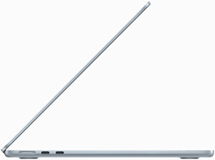
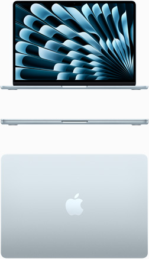

Design
Leve pelo caminho.

Superleve e com pouco mais de 1 cm de espessura, o MacBook Air se encaixa facilmente na correria da sua rotina e na sua mochila. O modelo com M4 é feito com mais de 50% de materiais reciclados e o alumínio da estrutura resistente também é reciclado.
Tela de 13 Polegadas
Tela de 15 Polegadas



Nova cor. Tudo Azul São quatro cores divinas para você escolher. Uma delas é a nova azul-céu. E todos os modelos de MacBook Air vêm com um cabo MagSafe na mesma cor.